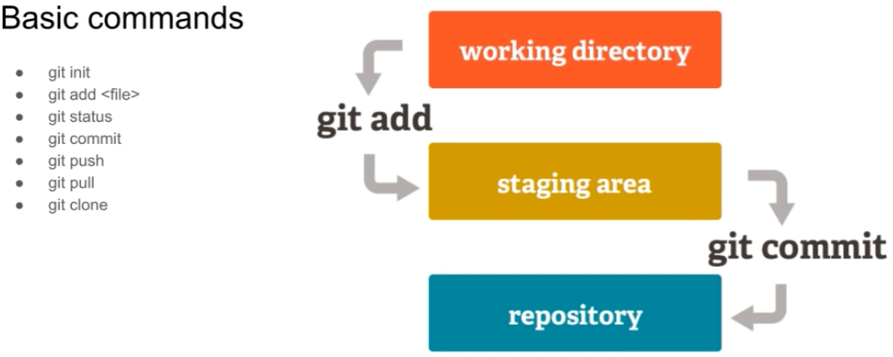
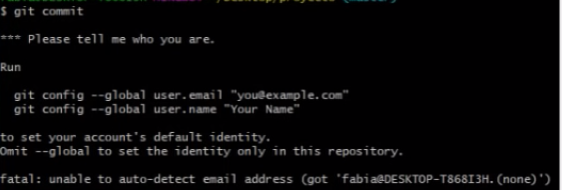

Hola desde GIT
De manera general git es un sistema de control de versiones (VCS).
Otro punto inportante es que a grandes rasgos se divide en 3
estados:
1. Working Directory
Lugar donde se esta trabajando cpn los archivos
2. Staging Area
Lugar donde se preparan los archivos para el guardado
(git add)
3. Repository
En esta parte es cuando ya se va sibir como tal los archivos o proyecto a un repositorio
con todos los cambios realizados (git commit)

Comandos GIT
'git init' => inicializar un proyecto con git
'git status' => sirve para saber los archivos con los que estamos trabajando
'git add nombre_archivo' => para agregar un archivo a nuestro stating area
'git log' => para ver los commits que hayamos echo
'git commit' => para crear un primer punto de partida de nuestro proyecto
'git commit -m message' => para evitar entrar al editor vim
'git checkout -- nombre_archivo' => para revertir los cambios hechos anteriormente
'git diff' => para ver las diferencias hechas en los archivos
Para la parte de commit nos pide ciertas configuraciones
que se muestran a continuacion:
E-mail y nombre de quien hace el cambio

Para ignorar archivos; es decir para que no se suban los cambios
Tenemos que crear un archivo .gitignore y adentro escribir el nombre
de los archivos que no queremos incluir en los commits.
Para este ejemplo creamos la carpeta test y no la vamos a incluir en los commits
Ramas branch y mas...
Las Ramas o branch, se refieren a una verison de el proyecto que tiene mas funcionalidad o que se le agrego otra caracteristica
'git branch' => para saber las ramas que se encuentran
'git branch name_rama' => para crear una nueva rama
'gir chekout name_rama' => para acceder a una rama en especifico
'git add .' => para agregar todos los archivos que estan en el entorno de trabajo